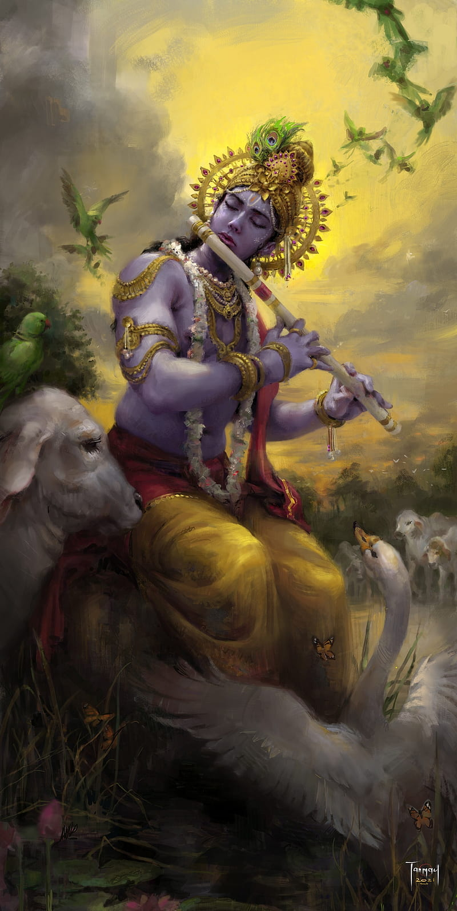

Weapon

Skill
Lord Krishna was the embodiment of wisdom, charm, and divine power. A master strategist, musician, and warrior, he was skilled in diplomacy and politics. His greatest contribution to humanity was the *Bhagavad Gita*, where he taught Arjuna about life, duty, and devotion. Krishna’s calm intellect and divine knowledge guided people toward righteousness and peace.
War
In the Kurukshetra war, Lord Krishna served as Arjuna’s charioteer and spiritual guide. Though he vowed not to wield weapons, his presence alone turned the tide of battle. Krishna revealed his divine form (Vishwaroopa) to Arjuna, showing the truth of life, death, and destiny. Through his teachings in the *Bhagavad Gita*, he inspired not only Arjuna but the entire world to follow the path of dharma.
Character
Lord Krishna was known for his kindness, intelligence, and playfulness. As a child, he was mischievous and loved by everyone in Gokul and Vrindavan. As an adult, he became a philosopher, protector, and divine ruler. Krishna stood for truth and justice but also taught that love and devotion are the highest forms of worship. His life balanced the human and the divine, showing that one can be spiritual while living in the world.
Family Details
Lord Krishna was born to Devaki and Vasudeva in Mathura, but was raised by Yashoda and Nanda in Gokul. He belonged to the Yadava clan and later ruled the kingdom of Dwaraka. His consort was Rukmini, and he had several wives and children, including his son Pradyumna. Krishna’s bond with his brother Balarama and his eternal love for Radha are celebrated as symbols of divine affection.